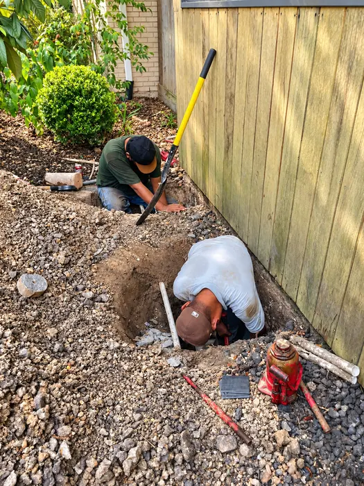
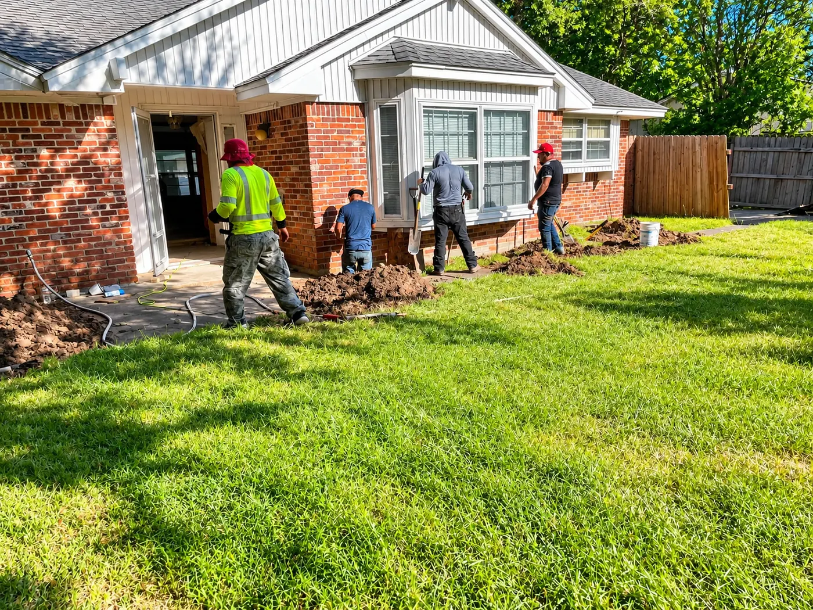
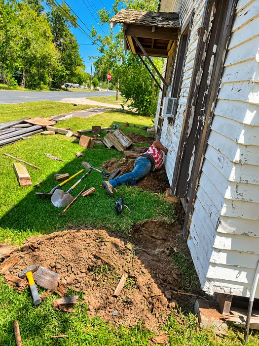
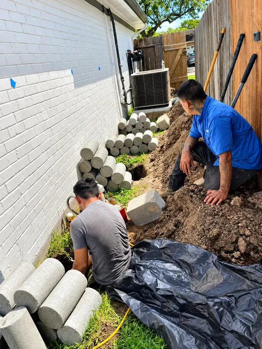
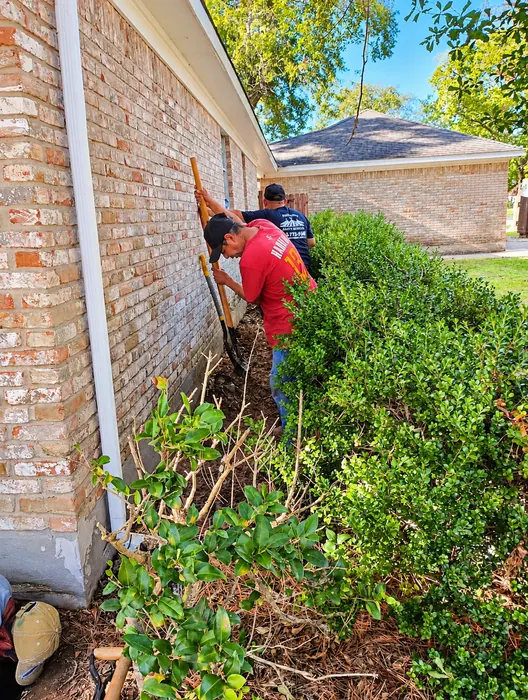
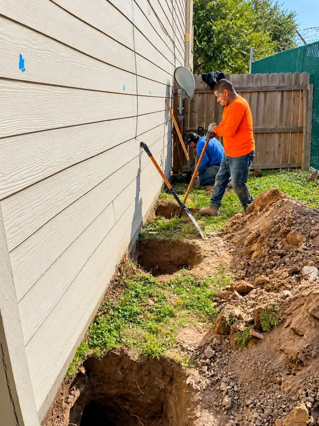
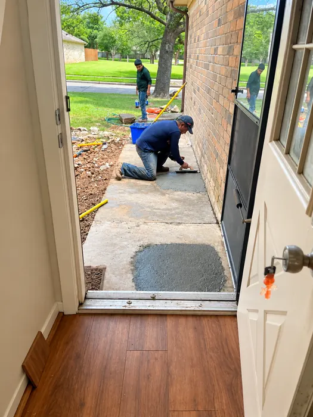
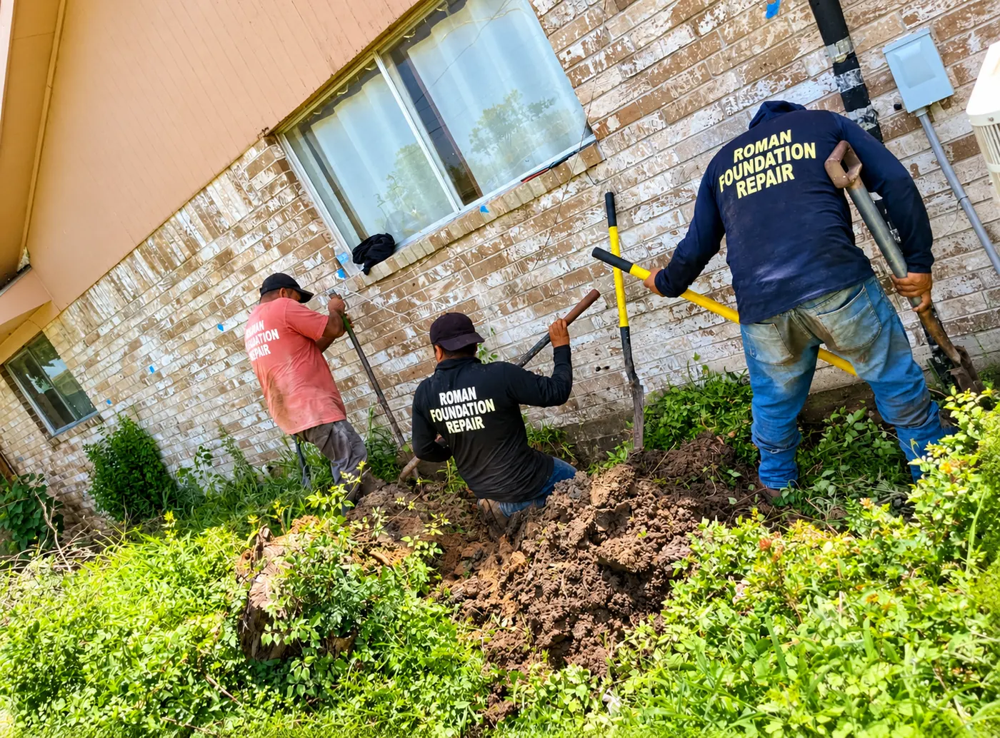

House Leveling
House leveling in Houston addresses homes that have shifted or settled unevenly. Work may involve lifting and re-supporting affected areas so the structure sits on more stable support.
Ask about house leveling
Foundation Repair · Houston, TX
Foundation concerns can affect your home's stability and peace of mind. Explore foundation repair solutions for your property and contact Roman Foundation Repair to discuss your needs.
What We Do
Every home and every foundation is different. The right approach depends on your foundation type, soil and drainage conditions, and what an assessment of the property shows.

House leveling in Houston addresses homes that have shifted or settled unevenly. Work may involve lifting and re-supporting affected areas so the structure sits on more stable support.
Ask about house leveling
Pier and beam foundation repair focuses on the supports beneath raised homes. Depending on conditions, this can include addressing piers, beams, or shimming beneath the structure.
Ask about pier & beam
Slab foundation repair in Houston addresses concrete slabs affected by soil movement. Options vary by property and may include installing supports beneath the slab perimeter.
Ask about slab repair
Water collecting near a home can contribute to soil changes around the foundation. Foundation drainage solutions aim to manage how water moves away from the structure.
Ask about drainage
If you've noticed cracks, sloping floors, or sticking doors, an assessment can help identify what's happening and whether repair work is appropriate for your home.
Ask about an inspection
Patching and repairing concrete areas such as walkways around the home, including surfaces disturbed during foundation work.
Ask about concrete repair
About Roman Foundation Repair
Foundation problems rarely have a one-size-fits-all answer. A crack in one home may mean something very different from a similar crack in another. That's why understanding your property comes first.
Roman Foundation Repair works on homes in Houston, Texas, focusing on house leveling, pier and beam, slab, and drainage work.
Our Projects
Photos from Roman Foundation Repair job sites — excavation, foundation support work, concrete repair, and materials on site.
Know the Signs
These signs can have more than one cause — not all of them mean foundation failure. An appropriate assessment can help determine what's going on.
Cracks in foundation walls, brick, or interior drywall — especially stair-step or widening cracks.
Floors that slope, sag, or feel uneven when you walk across a room.
Doors or windows that start to stick, won't latch, or become difficult to open and close.
Visible gaps or separation between frames and the surrounding walls.
Pooling water, poor drainage, or soggy soil close to the foundation after rain.
How It Works
Call (832) 468-3075 or send an estimate request with a few details about your home.
Tell us what you're seeing — cracks, uneven floors, sticking doors, or drainage issues.
Go over the appropriate assessment of your property and the proposed repair options.
Once you've decided on a plan, the agreed repair work moves forward.
Questions
Common signs include cracks in foundation walls, brick, or drywall; sloping or uneven floors; doors and windows that stick or won't close properly; gaps around window and door frames; and water collecting near the house. These signs can have several causes, so an assessment is the best way to understand what's happening.
Foundation movement is often related to changes in the soil beneath and around the home. Clay soils, common in the Houston area, can expand when wet and shrink when dry. Drainage problems, long dry periods, heavy rain, plumbing leaks, and tree roots can all contribute. The cause varies from home to home.
A slab foundation is a concrete slab poured directly on the ground, with the home built on top of it. A pier-and-beam foundation raises the home above the ground on piers and beams, leaving a crawlspace underneath. Because they're built differently, the repair approaches for each are also different.
Yes, they can. When water collects near a home or drains toward it, the soil around the foundation can become saturated and then dry out again, which may contribute to movement. Managing how water flows away from the house is often part of protecting a foundation.
The fastest way is to call (832) 468-3075. You can also fill out the estimate request form on this page with your contact details and a short description of the problem.
Call (832) 468-3075. Roman Foundation Repair is located at 10402 Moorberry Ln, Houston, TX.
Contact Roman Foundation Repair to discuss your home's foundation concerns and explore the next steps.
Contact
Calling is the fastest way to reach our team about foundation repair in Houston.
Tell us a little about your home. Fields marked with an asterisk are required.